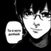

God Game
By.x6uxoiAngelx
>ping: ...<
#VibeCode
Tg: It_is_not_known
GitHub: GG---God-game-interneturok-VibeCode
Активная вкладка (Не трогать если не знаешь зачем!)
Определяем...
Ключи из URL (Не трогать если не знаешь зачем!)
Имя пользователя
Загрузка...
История имён
Сканирование вопросов
Сканируй страницу, включай автокопирование или копируй текущий тест/обычное задание вручную.
Сканирование не запущено
Последний результат
Расчёт итоговых оценок
Открой страницу журнала и нажми кнопку. Итоговая оценка считается по среднему баллу.
Количество оценок за четверть можно просмотреть тут
Количество оценок за четверть можно просмотреть тут
Оценки ещё не считались
Список предметов
Откройте журнал и нажмите «Посчитать оценки»
Ответ
Вставьте сюда ответ в формате «Задание N / Тип / Ответ / Пояснение».
Подсветка будет применена прямо в открытой вкладке с тестом.
Профиль · Я
Данные берутся с открытой страницы InternetUrok: имя — из боковой панели, класс — из фильтра журнала. После успешного чтения данные сохраняются и показываются из локального хранилища.
Имя
Не сохранено
Класс
Не сохранено
Статус
Dev
Проверено ДЗ: 0. Тестов: 0. Ошибок загрузки: 0. Пропущено с оценкой: 0.
Профиль · Тесты
Сохранённые тесты видны на любом сайте. Новое сканирование запускай на странице журнала InternetUrok.
Гибкая настройка поиска
Оставьте поля пустыми, чтобы сканировать всё как раньше. Можно ограничить поиск предметом и/или неделей.
Вид списка тестов
Найденные тесты (по четвертям)
Список пуст. Откройте журнал для сканирования или загрузите .txt со списком тестов.